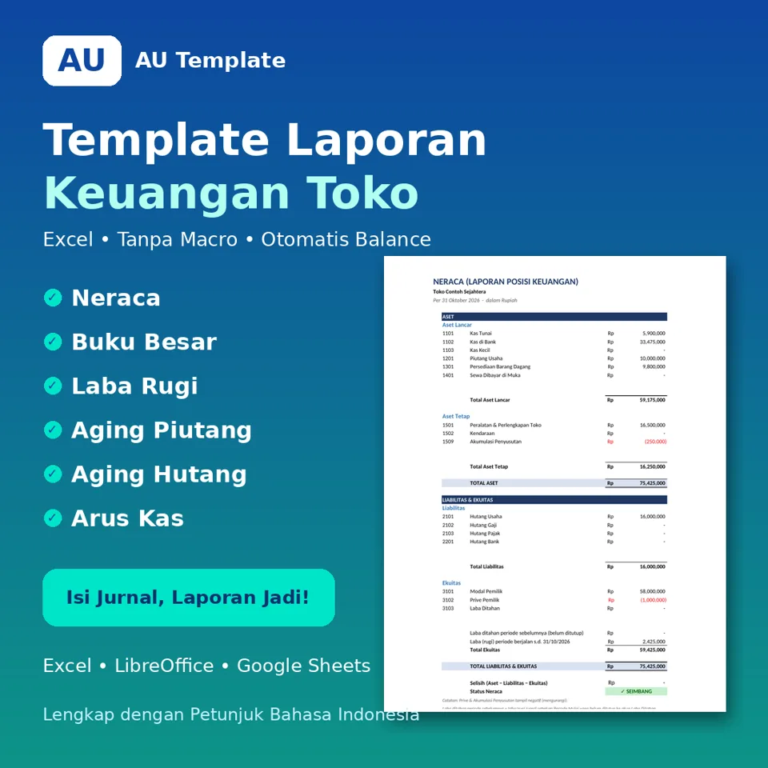
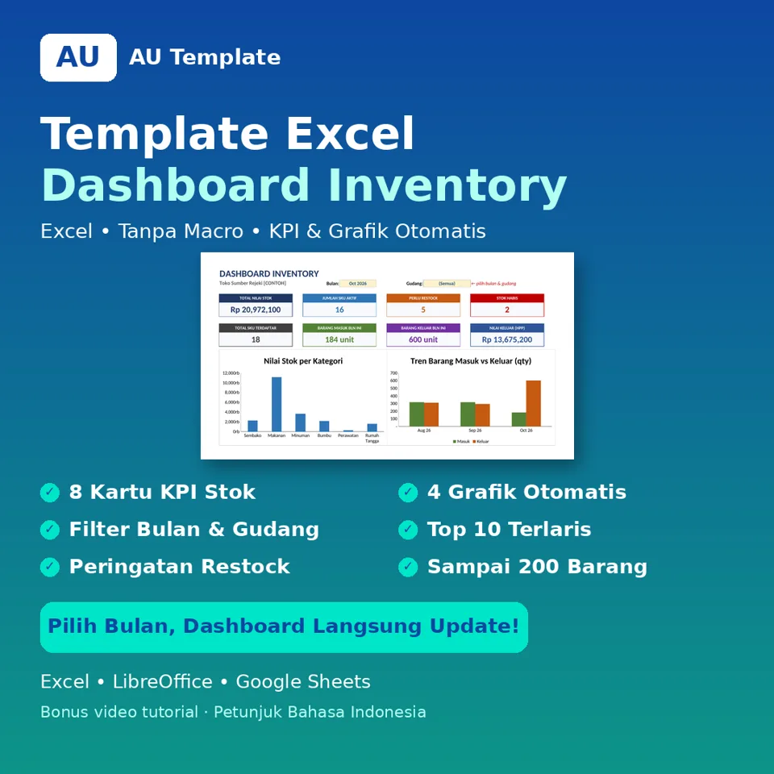
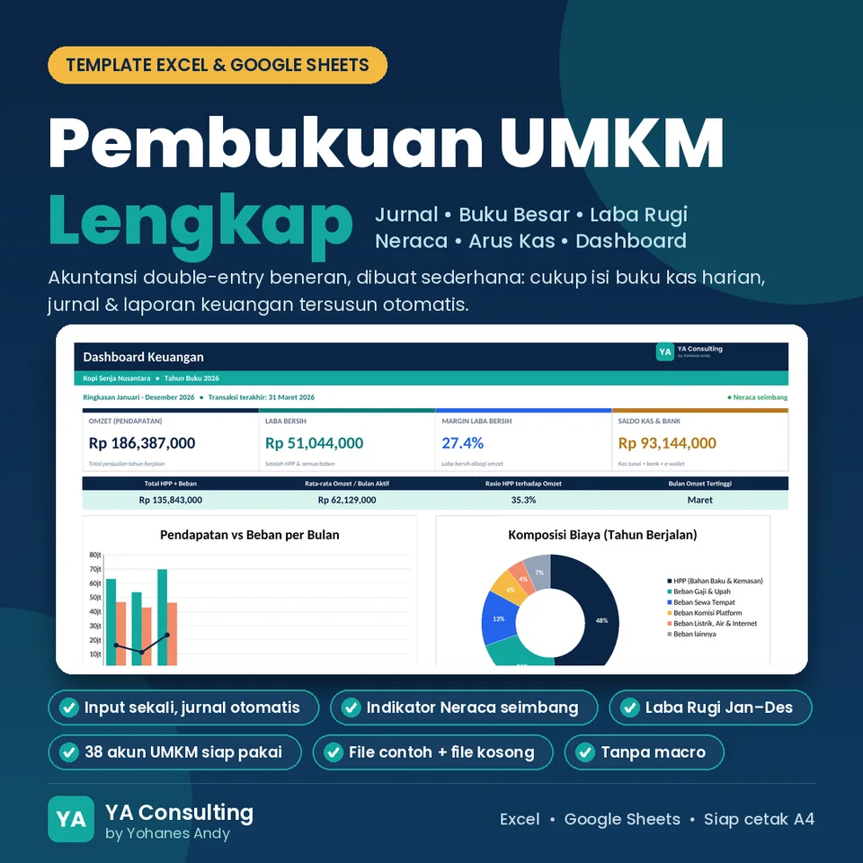
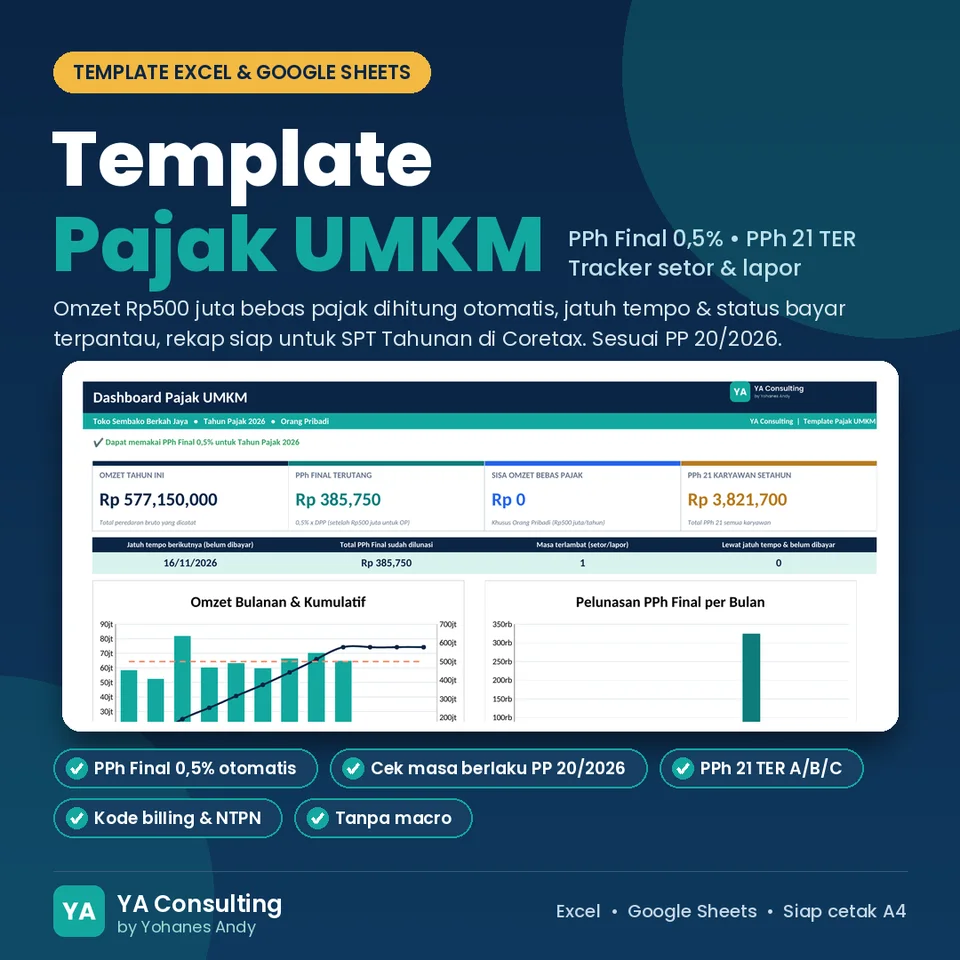
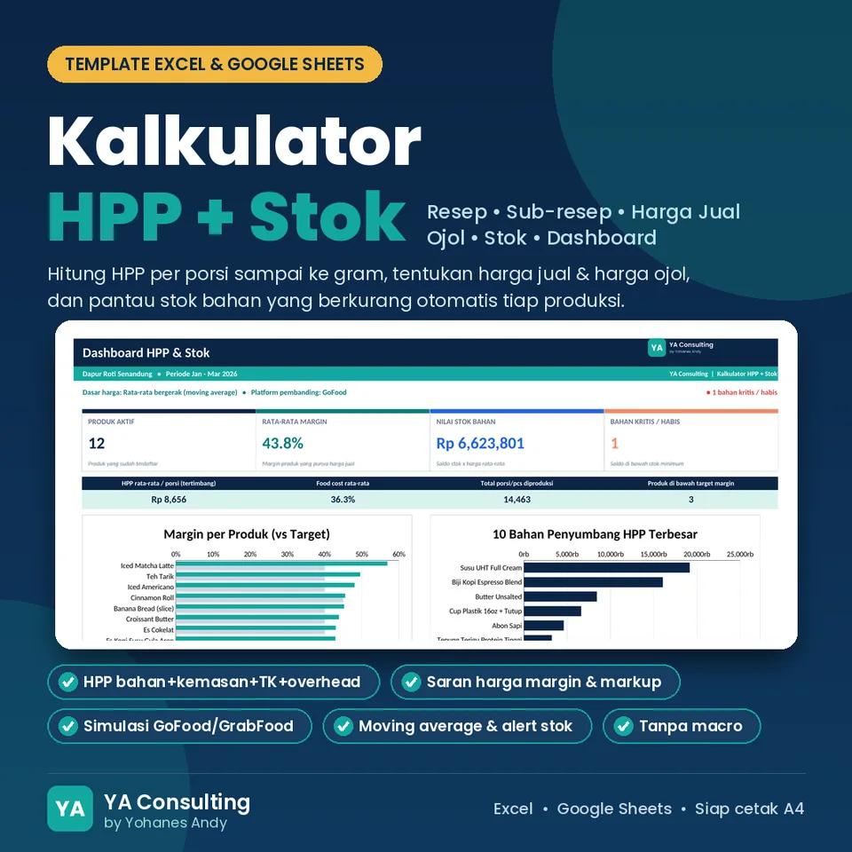
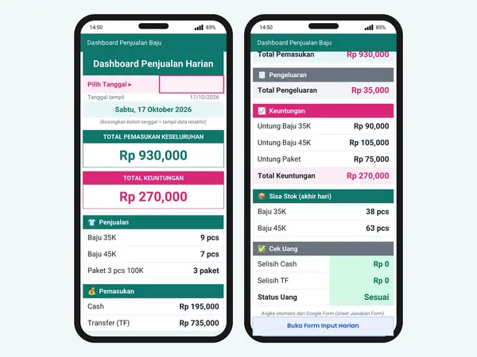
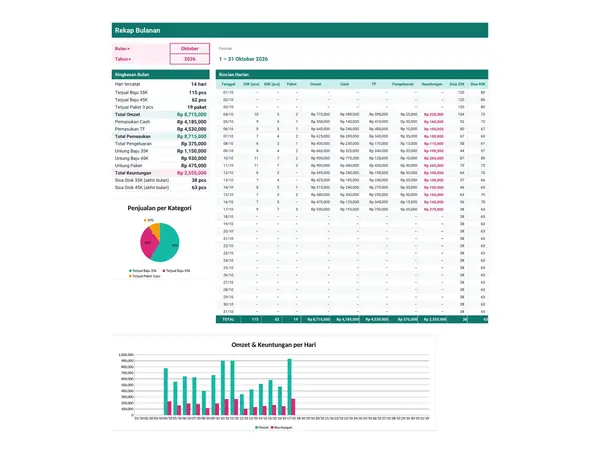
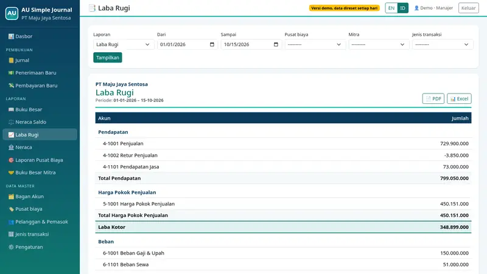
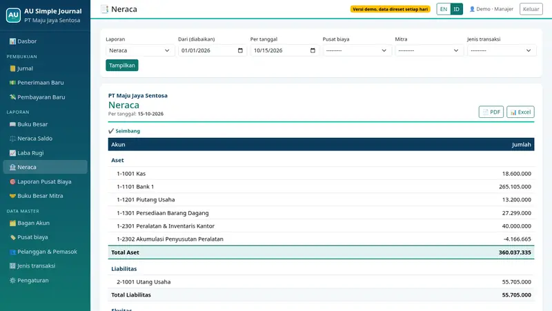
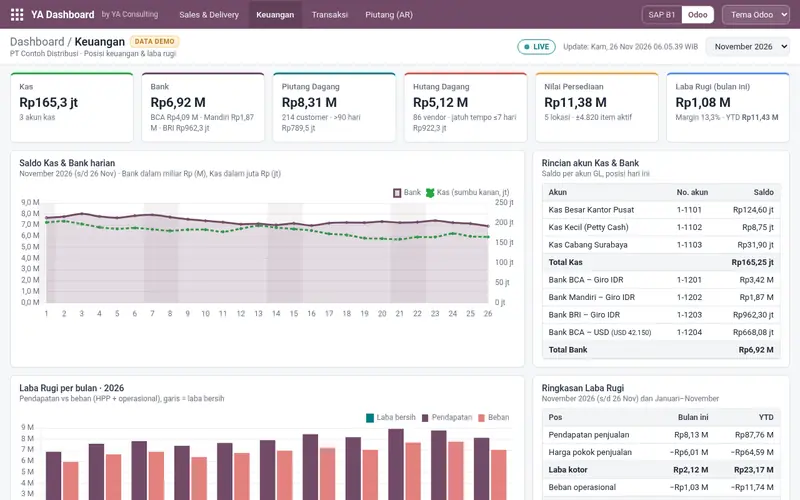

Jasa & Layanan
Jasa Report Excel, Olah Data CSV & Laporan Keuangan + Dashboard
Olah data Excel/CSV jadi rekap, laporan laba rugi, arus kas, dan dashboard yang rapi.
Mulai Rp500.000 · harga final sesuai ruang lingkup
Ringkasan
Olah data Excel/CSV jadi rekap, laporan laba rugi, arus kas, dan dashboard yang rapi. Semua angka di halaman ini adalah harga mulai; saya kunci harga final di penawaran tertulis setelah scope jelas.
Fitur yang Anda dapat
- Rekap dari CSV atau Excel menjadi tabel yang rapi dan siap saring
- Laporan laba rugi, neraca, arus kas, atau laporan penjualan sesuai kebutuhan
- Dashboard dengan KPI, grafik, dan filter periode atau gudang
- Bisa dikerjakan di Microsoft Excel, LibreOffice, atau Google Sheets
- Rumus dan pivot yang transparan, tanpa macro yang sulit dirawat (kecuali Anda minta)
- Template siap pakai yang bisa Anda isi ulang setiap bulan
- Export PDF untuk dibagikan ke atasan atau owner
- Penghubungan ke data ERP (Odoo atau SAP) bisa dibicarakan terpisah atau lewat YA Dashboard
Contoh layar
Klik gambar untuk memperbesar. Layar memakai data demo atau ilustrasi berlabel data dummy — bukan data klien.


Template laporan keuangan Excel — laba rugi dan ringkasan kas.

Dashboard inventory di Excel: KPI, grafik, dan filter.

Template pembukuan siap isi ulang setiap periode.

Contoh olah data untuk kebutuhan pajak.

Laporan HPP dari data stok dan pembelian.

Dashboard otomatis di Google Sheets, nyaman dilihat di HP.

Rekap transaksi di Google Sheets, terisi dari form.

Laporan laba rugi di aplikasi (PT Maju Jaya Sentosa, data demo).

Neraca yang rapi, siap diekspor PDF atau Excel (data demo).

Bila data sudah di ERP, tampilan bisa dinaikkan ke YA Dashboard (data demo).Paket & harga
Rekap dan laporan
mulai Rp500.000Satu set rekap atau laporan dari file yang sudah ada.
Laporan keuangan + dashboard
mulai Rp1.500.000Laba rugi / neraca / arus kas plus tampilan KPI.
Harga mulai, final sesuai jumlah laporan, sumber data, dan apakah perlu diisi otomatis setiap periode.
Skema kerja
Pertanyaan singkat
Apakah harga di halaman ini sudah final?
Belum. Angka di situs adalah harga mulai. Harga final saya kirim lewat penawaran tertulis setelah ruang lingkup (scope) disepakati.
Bagaimana cara mulai?
Cukup DM saya di Threads untuk konsultasi gratis. Setelah kebutuhan jelas, saya buatkan ringkasan scope dan penawaran tertulis.
Apa yang termasuk support 3 bulan?
Perbaikan bug dari pekerjaan yang sudah diserahkan, pertanyaan pemakaian, dan penyesuaian kecil. Perubahan lingkup baru dihitung terpisah.
Apakah ada biaya langganan bulanan?
Untuk pengerjaan jasa, tidak ada biaya langganan. Support ringan 3 bulan sudah termasuk. Maintenance tahunan bersifat opsional, sekitar 15–20% per tahun. Untuk aplikasi custom, biaya hosting dihitung terpisah jika Anda ingin saya yang kelola.
Bedanya dengan YA Dashboard SAP/Odoo?
Jasa ini merapikan file Excel/CSV atau membuat laporan di spreadsheet. YA Dashboard adalah aplikasi dashboard yang menarik data langsung dari SAP B1 atau Odoo. Keduanya bisa saling melengkapi.
Mau bahas kebutuhan Anda?
Konsultasi gratis. Cukup DM saya di Threads. Saya balas dengan pertanyaan ringkas, lalu penawaran tertulis bila lingkupnya sudah jelas.
DM @yohanesandy.erp